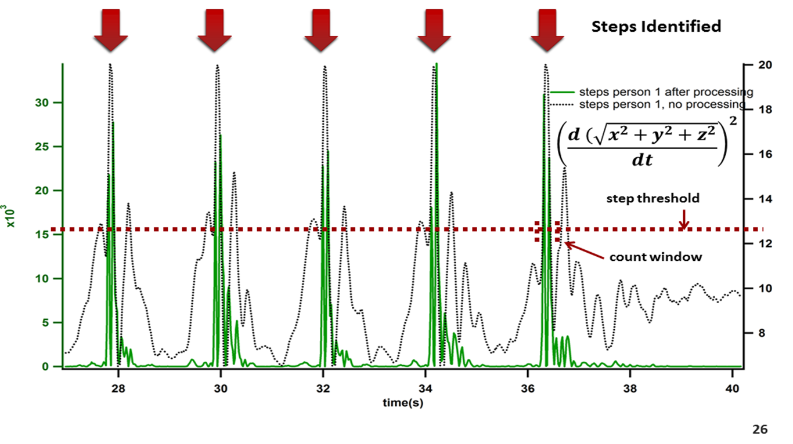

Stream Data Live from Glass
Glass is equipped with a number of sensors - accelerometer, gyroscope, compass, camera, microphone. Never before have these sensors been mounted so securely, and comfortably, on the head. The possibilities are endless. Click to see a live stream of the acceleromter data.
Stream Data Live from a Bluetooth Sensor
Glass is even more powerful because it "plays nicely" with bluetooth sensors, opening up a wide range of potential applications. Click to see a demo of live data streamed from a TI SensorTag.
Realtime Accelerometer Data
Steps: 0
Data Acquisition on Glass
To demonstrate the capability of streaming data in realtime from Glass, we built a demo that counts your steps as you walk. On glass, run the app Log Data and you should soon see accelerometer data plotted live on the graph in gray. Select which axis to plot using the x, y, and z buttons. You can download a text file of the data, which is in the following format: elapsed time in seconds, x, y, z . We use a simple approximation algorithm to count your steps (as explained below). This yields periodic peaks, or steps, shown in blue on the plot. Clearly, this is a very simple approximation, but it yields surprisingly accurate results. The true value in this demo is in realizing the capability of the process - data can be streamed from Glass, analyzed and processed, and displayed on a webpage, all in realtime.

Demonstration of Processing Algorithm
This graph demonstrates the simple processing algorithm we use to "clean up" the accelerometer data and identify steps. In gray is the raw accelerometer signal, and in green is the derivative of that signal squared. You can see how this clarifies the peaks. We then use a timed window to extract a step from the signal.
BLE SensorTag & Glass
To demonstrate the capability of pairing to and streaming data live from a bluetooth low energy sensor, we worked with the TI SensorTag. This device is about the size of your thumb, and contains the following sensors: IR temperature, humidity, gyroscope, accelerometer, magnetormeter, and barometric pressure. To stream data live from the sensor, run the BLE sensor app on glass, turn the SensorTag on, and tap once to listen to sensors. Data should stream live and start appearing on the graph and gauges. This is just a demo of a capability, but it demonstrates what is possible by pairing Glass with BLE sensors.